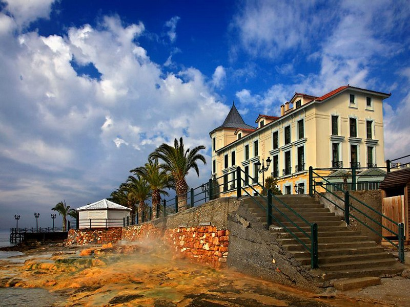
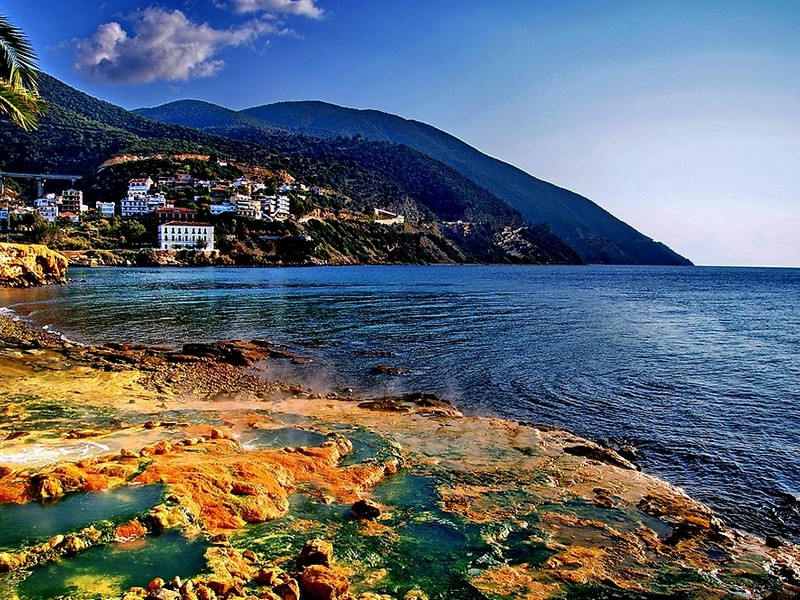

Ευεξία που φαίνεται
Εδώ θα καταπολεμήσετε το στρες, θα ανακτήσετε την πνευματική σας διαύγεια και θα φύγετε με μια μοναδική αίσθηση ευεξίας.
ΘερμαλισμόςΕυεξία, χαλάρωση και αναζωογόνηση. Πολλές οι λέξεις για να περιγράψεις όλα όσα μόνο η Αιδηψός μπορεί να προσφέρει.

Καλώς ήρθατε
Η μαγευτική πόλη των Λουτρών της Αιδηψού, στα βορειοδυτικά της Εύβοιας, είναι ένα από τα πιο διάσημα τουριστικά θέρετρα της Ελλάδας. Με νέο «πρόσωπο», η Αιδηψός δεν απευθύνεται μόνο σε ηλικιωμένους, αλλά στρέφεται κυρίως στους νέους.
Ανανεωμένη ριζικά, διαθέτει καλαίσθητα σύγχρονα ξενοδοχεία, εστιατόρια, ταβέρνες, beach bars, καφετέριες, μπαράκια και clubs, που υπόσχονται να καλύψουν τις επιθυμίες και του πιο απαιτητικού επισκέπτη.
Δείτε τα ξενοδοχεία μαςΓιατί Αιδηψός
Εδώ θα καταπολεμήσετε το στρες, θα ανακτήσετε την πνευματική σας διαύγεια και θα φύγετε με μια μοναδική αίσθηση ευεξίας.
ΘερμαλισμόςΑλπικά δάση, επιβλητικά βουνά, πλούσια χλωρίδα και πανίδα, που συναντούν τη γαλαζοπράσινη θάλασσα του Βόρειου Ευβοϊκού.
ΑξιοθέαταΑυτοκράτορες, φιλόσοφοι και σταρ της διεθνούς κοσμικής ζωής διάλεξαν τα ίδια νερά. Η ιστορία είναι ζωντανή σε μια βόλτα.
ΙστορίαΣαν πέσει η νύχτα, η Αιδηψός «ντύνεται» στα βραδινά: μπαράκια με ψαγμένη μουσική, δροσερά cocktails και διασκέδαση ως το πρωί.
ΨάχνειςΘερμαλισμός
Σε SPA, δημόσια και ιδιωτικά, υδροθεραπευτήρια και πισίνες ξενοδοχείων, χιλιάδες άνθρωποι χαλαρώνουν και βρίσκουν ανακούφιση από παθήσεις.

Αξιοθέατα
Τα ξενοδοχεία διατηρούν την αισθητική της Belle Epoque.
Η χαρακτηριστική εξέδρα με ηλιοβασίλεμα μαγικό και θέα το Βόρειο Ευβοϊκό κόλπο.
Έργο του Ερνέστο Τσίλλερ, στολίδι νεοκλασικής αρχιτεκτονικής στο κέντρο της πόλης.
Ένα από τα καλύτερα σωζόμενα ευρήματα της ρωμαϊκής περιόδου, πίσω από το υδροθεραπευτήριο του ΕΟΤ.
Η Αιδηψός στο κινητό σου